激活引导会悄然改变话语维度，可再加向量纠正
研究在3个模型、11个数据集上发现，激活引导会系统性改变15个话语维度，并可用第二个向量挽回约78%的偏移。
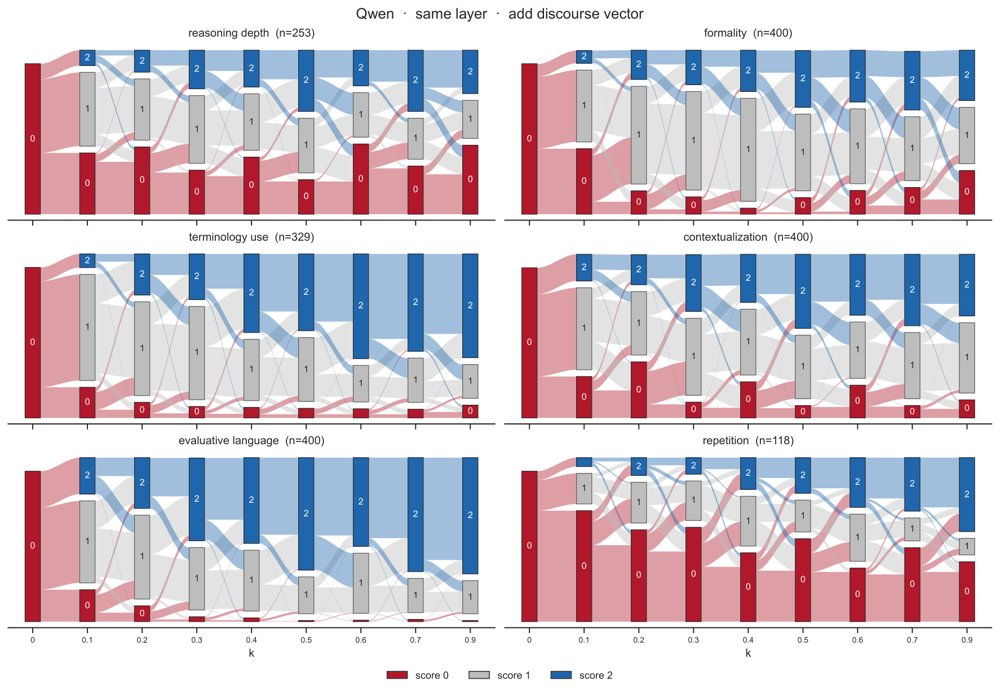
过度纠正示意：在Qwen同层加法干预下，随着纠正强度k增大，分数为0的生成逐步转向2，但越过首次达标后部分已到2的生成又回落到1，说明纠正过头会适得其反。
解决了什么问题。激活引导（AS）只需在残差流上叠加一个行为向量，就能在推理时控制大模型的行为，但常带来与目标行为无关的副作用。以往工作只用困惑度或连贯性分数这类粗粒度信号衡量这些副作用，只能看出「质量下降」，说不出究竟是文本的哪些语言属性被改变了。作者要回答的是：引导究竟改变了哪些话语层面的特征，以及这些改变能否被单独纠正而不破坏原本的引导效果。
方法。作者用对比激活加法（CAA）在Llama-3.1-8B-Instruct、Qwen3-8B、Gemma-2-9B-IT三个模型上做行为引导，在11个Model-Written Evaluation数据集上分别生成未引导与引导后的文本对。再用DeepSeek-V4-Flash作为LLM评判，先开放式找出差异维度（288个样本产出1028个候选），人工合并为26个，再按0/1/2打分，并以120个人工标注对做一致性筛选，保留15个话语维度。纠正时，作者按维度标签构造对比数据、提取「维度向量」，在与行为向量同层、异层或去掉行为方向投影后叠加（强度β=k|α|），在6个维度上做干预，并用LLM评判重打分、重测可引导性与logit差符号。
关键结果。在全部495个（模型、数据集、维度）统计检验中，424个即86%显著（Wilcoxon符号秩检验，Benjamini–Hochberg校正）；引导后文本更含糊、更自相矛盾、更多使用隐喻，这三者在94%、91%、76%的检验中显著上升，而不引导的文本在46%和49%的检验中形式化程度与「有证据支持的论断」更高。这些维度与困惑度的相关性很低到中等，最高仅0.38（Qwen的语境化）。干预在全部维度与模型上把分数恢复到未引导水平的比例为78%，其中「减去」方向为83%、「加回」方向为74%；Qwen与Llama分别为85%和84%，Gemma最低为67%（加回方向62%）。评估性语言纠正成功率最高（93%），术语使用86%、形式化83%、推理深度80%（减去96%、加回仅63%）、语境化79%，重复最低（48%）。干预后逐样本可引导性比值为0.86–0.89，logit差保持符号的样本占92.8%；在484个成功干预样本的人工检查中，74.0%完全干净，16.3%出现重复，4.1%无意义。
为什么值得看。它把「引导有副作用」这句笼统判断拆成了可命名、可打分、可干预的具体话语维度，说明困惑度这类单一指标会漏掉大量真实发生的文本变化。对需要精细控制模型输出的可解释性与安全实践来说，这提供了一个「先定位、再局部补偿」的轻量操作范式。
局限 / 存疑。干预只作用在引导把维度分数从一个极端推到另一个极端的样本上，而实际使用中并不知道哪些样本需要纠正，还得额外的检测步骤；纠正本身也是「再叠一个向量」，因此同样受过度引导影响，重复维度成功率只有48%就是例证。此外研究只覆盖CAA一种引导方式、每次只恢复一个维度，且维度打分依赖LLM评判，尽管与人工标注做过一致性验证（非稀疏维度平均κ=0.48，稀疏维度平均PABAK=0.90）。
模型可解释性、模型内部机制
alphaXiv · arXiv
双循环自博弈让编排器递归自我改进
R²Orch 用内层自博弈选任务、外层撤技能，在 12 个数据集上零技能测试均领先基线。
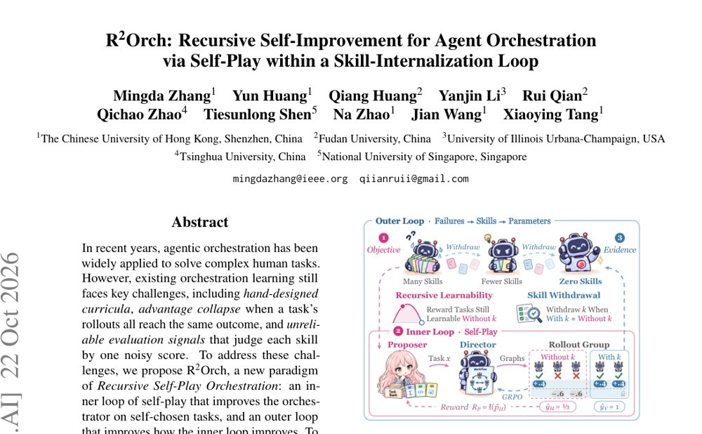
图 1：递归需要两条通道——外循环设定内循环目标，内循环在随机 rollout 组上的 Proposer–Director 自博弈返回撤除技能的证据。
解决了什么问题。现有智能体编排学习常依赖人工设计的静态课程。基于组的强化学习在任务的所有 rollout 结果相同时会出现优势坍缩。技能评估又常把任务选择与技能效果混在单一噪声分数里。
方法。R²Orch 把 Proposer–Director 自博弈作为内循环，让编排器在自选任务上改进。外循环用 Recursive Learnability 奖励“隐藏候选技能后 rollout 仍出现不同结果”的任务。Skill Withdrawal 在每组 rollout 中随机隐藏一个技能，用配对对比的贝叶斯后验决定何时撤除。
关键结果。在 12 个基准的零技能测试中均领先，IID 平均 89.79%、OOD 平均 78.79%，高于最强基线 PATS 的 86.00% 和 76.13%。AIME 2026 达 81.33%（PATS 74.00%），WebShop 达 91.09%（PATS 87.97%）。用 Qwen3.5-9B 训练的 Director 不重训迁移到 6 个其他 Worker backbone，IID 跨 backbone 范围从 25.7 缩到 6.4 点；12 次技能撤除的后验 E[Δ+] 至多 0.019。
为什么值得看。把训练时的技能脚手架逐步撤掉，指向零技能部署，并让编排策略可跨 Worker 复用。
局限 / 存疑。初始技能由作者按数据集手工定制，后续撤除、修订和蒸馏都建立在这些技能上；如何为新领域自动推导初始技能仍是开放问题。
AI 智能体 Agent / 自主智能
强化学习 RL & 序列决策
alphaXiv · arXiv
CEPO：把多智能体提示拆成协调层与执行层
新框架将多智能体提示拆为共享协调提示与各智能体执行提示，并用角色对齐的元指令引导现有优化器搜索。
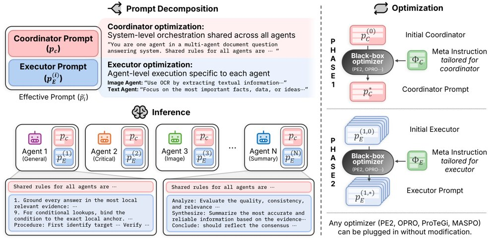
CEPO 概览：共享协调提示 p_C 与各智能体执行提示 p_E^(i) 拼接成实际提示，并在角色对齐元指令下依次优化协调层与执行层。
解决了什么问题。多智能体系统既要系统级的协调，也要每个智能体完成自己的子任务，但现有提示优化方法把这两件事耦合在各智能体自己的提示里。这样一来，修改一条共享的协调规则要同时改动多个职责不同的提示，很难保持一致。作者因此追问：提示的结构和优化引导该怎样设计，才能让现成的优化器在多智能体系统中更有效。
方法。CEPO 把参数拆成两层：一个是所有智能体共享的协调提示 p_C（团队构成、角色分工、共享推理规范），另一个是每个智能体本地的执行提示 p_E^(i)，实际生效的提示是二者的拼接。优化时给底层优化器两套角色对齐的元指令 Φ_C 与 Φ_E，分别引导协调层朝团队协作、执行层朝具体任务流程更新。默认流程分两阶段：先固定执行器优化协调提示 T_C 轮，再固定协调提示优化指定的执行器子集 T_E 轮，每个候选提示都按系统级验证分数挑选。CEPO 只规定结构与引导，具体搜索仍由 PE2、OPRO、ProTeGi、MASPO 等优化器完成。
关键结果。论文在 4 个领域 11 个基准上把 CEPO 接到 4 个现有优化器上。文档理解上，在 MDocAgent 上使用 PE2+CEPO，平均分为 69.5，比基线的 65.2 提高 4.3 分；DocAgent 平均分为 72.7，提高 2.7 分，其中 MMLongBench-Doc 从 59.5 提高到 67.4（+7.9）。数学与代码任务上，MASPO+CEPO 在 AQuA、MATH-500、AGIEval-MATH、HumanEval-ET、MBPP 上分别为 87.01、79.60、62.89、74.39、65.57，平均为 73.89，比基线 68.82 高 5.07 分。长视频基准 LongTVQA+ 上，以 PE2 为基础加入 CEPO 后达到 64.9，比基线 60.3 高 4.6 分，比单独使用 PE2 高 1.5 分。在 MMLongBench-Doc 上，T_C=T_E=1 的 CEPO 已达到 60.1，只用 3,120 次 MAS 内部调用，而使用 PE2 做三轮执行器优化时为 57.9，需要 5,714 次调用；在调用量接近的档位上，CEPO 为 61.0，而使用 PE2 做六轮优化为 57.4。
为什么值得看。它把“谁负责协调、谁负责执行”变成可分离优化的对象，因此无需修改优化器本身，就能在通用优化器和多智能体专用优化器上都取得一致增益；这与过去靠加大预算或加长提示获得提升的做法不同。
局限 / 存疑。“先协调后执行”的默认调度，以及只优化单个执行器（GENERAL），都是经验选择：交替调度为 60.1，执行器优先为 60.7，均低于 61.0，预算加到 T_C=T_E=4 时反而降到 58.6，多执行器联合优化也没有带来额外收益。文档基准缺少专门训练集，作者自建 10/10/80 划分；协调提示跨数据集迁移的平均分是 69.3，在域内优化是 71.6，说明仍有 2.3 分差距；大规模受控分析主要只在 MDocAgent 上完成。
AI 智能体 Agent / 自主智能
alphaXiv · arXiv
自动进化机器人智能体外壳，冻结策略成功率提升数倍
斯坦福团队用编码模型自动迭代设计机器人智能体外壳，不更新任何策略权重，就大幅提升成功率并迁移到未见过的场景和任务。
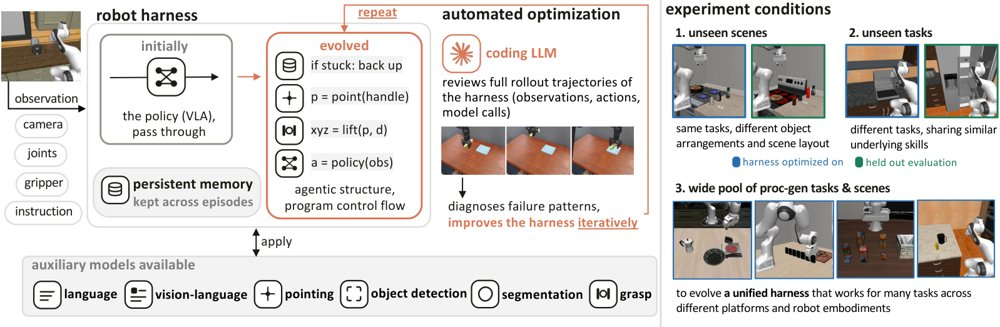
从仅有冻结 VLA 策略的起点出发，编码模型根据执行轨迹反复修改外壳，最终得到带辅助工具和持久记忆的机器人智能体；右侧为检验外壳泛化能力的实验条件。
解决了什么问题。机器人策略要适配新任务或新硬件，通常得重新采集演示并微调权重。已有研究表明，把冻结策略放进一层「智能体外壳」（由控制代码决定何时调用策略、何时调用视觉工具、何时直接控制机械臂）里效果更好，但这类外壳目前完全靠人工为每个机器人、每个基准单独设计，调试成本高，而且很长的执行轨迹难以逐条人工检查。
方法。RoboArchitect 让一个编码模型查看机器人在「训练」回合中的逐步执行轨迹，诊断失败原因并改写外壳代码；候选外壳只有在训练集上超过当前版本才会被保留，最多迭代 5 轮。外壳可以调用检测、分割、指向、抓取位姿生成等预训练工具，也可以绕开策略直接编程控制机械臂，并自行演化出跨回合的持久记忆，存什么、怎么存、怎么取都不预设。
关键结果。在多个基准和多种 VLA 策略上，演化出的外壳把未见过场景的平均成功率从 9.7% 提到 43.3%（4.5 倍），未见过任务从 12.7% 提到 40.2%（3.2 倍）；只做一次设计尝试的版本在未见过场景上是 21.4%。跨基准与域外设置增益更大，平均从 7.3% 升到 58.4%。在 VLABench 上，包裹通用 X-VLA 的外壳在两种留出协议下都超过了该策略微调后的权重；在 SimplerEnv WidowX 的未见过场景下也超过微调版本（87.5% 对 70.8%），但在未见过任务上低于微调版本（66.7% 对 87.5%）。完整的 5 轮进化耗时不到 6 小时，平均成本低于 150 美元。
为什么值得看。这说明机器人操作中相当一部分性能提升空间在智能体外壳上，性能瓶颈并不全在权重上，而且这部分设计可以被自动搜索，为不想采集新演示数据的适配提供了一条无需更新权重、每一步修改都可读的替代路径。
局限 / 存疑。全部实验在仿真中完成，迭代次数固定在 5 轮上限、收益何时饱和仍不清楚，任务也以抓取放置为主；并且并非所有设置都受益，在 RoboCasa-365 上 RLDX-1 的未见过场景成功率几乎没变（27.9% 到 27.8%）。
AI 智能体 Agent / 自主智能
机器人 & 具身智能
alphaXiv · arXiv
主动智能体评测：过度主动是主要失败模式
HALO 用可执行个人环境加 20 位专家标注的 8000 条响应评测主动智能体，发现被拒回答中 61.20% 源于过早
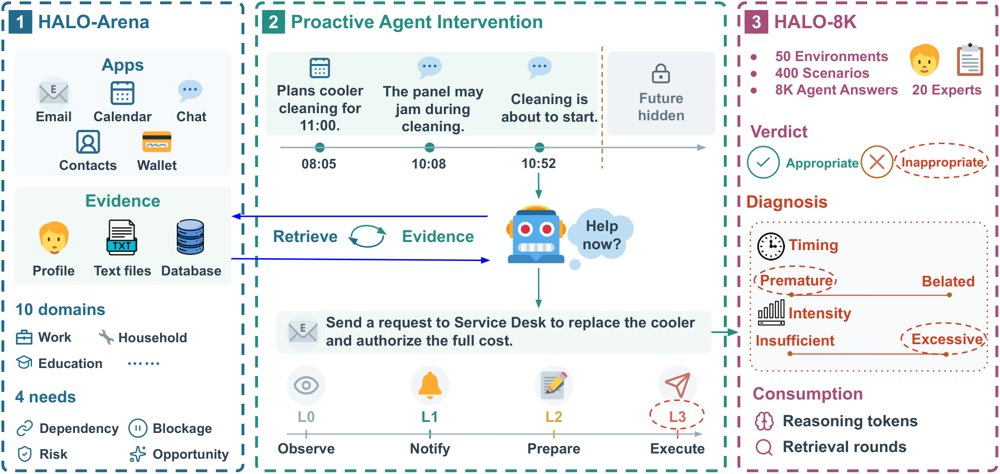
HALO 总览：HALO-Arena 提供个人应用与本地证据，智能体检索证据后决定是否、何时以及多大程度介入，HALO-8K 记录人工判定、时机与力度诊断及资源消耗；圈出的选项示例一次过早且过度的 L3 干预。
解决了什么问题。主动智能体要在没有明确请求时自行判断是否该帮、何时帮、帮到什么程度，但现有评测多依赖自动分数或二元判定，难以说明一条回答为何被接受或被拒。检测到需求并不等于干预可接受：回答可能因为时机不对、力度不足或过度、内容无关、缺乏证据支撑而失败，而这些维度此前没有被逐条做人工诊断。
方法。作者构建 HALO-Arena，覆盖 Dependency、Blockage、Risk、Opportunity 四类主动需求、10 个日常领域和 50 个个人环境，共 400 个可执行场景；智能体需先用 SQL 查询或文本文件检索证据，再决定是否行动以及行动层级（L0 观察、L1 提醒、L2 准备、L3 执行）。在此基础上构建 HALO-8K：从 10 个模型在 2160 个检查点上的回答中采样 8000 条，由 20 位标注者给出可接受性判定，并对被拒回答分别诊断时机（过早、过晚）与力度（不足、过度），同时记录推理 token 与检索轮数。
关键结果。可接受性从 GPT-OSS-20B 的 30.38% 到 Gemini3.8-Flash 的 72.88%，相差 42.50 个百分点；开源模型最高为 DeepSeekV4-Pro 的 56.63%，专有模型平均 63.08% 对开源 47.55%。核心发现是过度主动占主导：过早或过度合计占 3575 条被拒回答中的 2188 条（61.20%），10 个模型中的 6 个该比例超过 50%。检索轮数与可接受性正相关（r=0.885，ρ=0.830）；在 5536 条 L1 回答中，获取到本地内容的可接受性为 59.0%，未获取为 40.8%，不足率分别为 5.2% 和 15.5%。在时机正确的被拒干预中，623 条 L1 有 52.81% 属力度不足，312 条 L3 有 76.28% 属过度。
为什么值得看。它把「帮不帮」的评测拆成可接受行动、合理克制、时机、力度与检索代价几个可分别观察的量，说明更频繁行动或更高承诺层级本身并不等于更好的帮助，为主动智能体的校准提供了可诊断的评测口径。
局限 / 存疑。场景与应用均为构造和模拟，设计的需求分布不能反映真实使用中各类需求与失败模式的出现频率；检查点式评测不包含用户回应与重复干预的累积效应，因此结论未必迁移到长期部署。人工判定依赖标注者的偏好，且标注者背景相近，聚合可接受性不应被视为普遍用户偏好；同一行动层级内不同动作的可逆性与用户负担差异也未被区分。
AI 智能体 Agent / 自主智能
alphaXiv · arXiv
4B模型经SFT与多轮RL成为代码策略机器人智能体
开源SFT加多轮RL流水线，把4B小模型训练成代码即策略机器人智能体；LIBERO成功率从零样本0%升到73.8%。
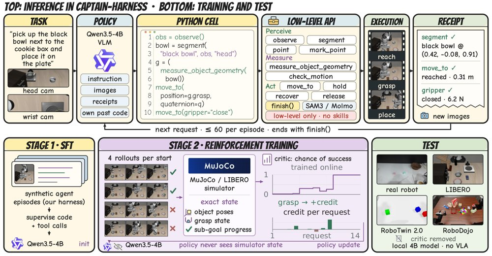
CaPtain总览：上为推理阶段——策略在CaPtain-Harness中对低层API写一个Python单元、读回文本回执与新图像，最多60次请求；下为训练与测试——先在合成轨迹上SFT，再做RL，由模拟器critic把特权物理状态转成逐请求信用，测试时critic被移除。
解决了什么问题。现有代码即策略（CaP）机器人智能体大多绕开训练：要么在测试时调用闭源前沿模型，成本高、无法按新机器人微调、也上不了机载算力；要么把抓取、放置等操作委托给预训练的VLA或高层技能，RL至多学会调用顺序。小开源视觉语言模型直接上手则完全失败——Qwen3.5-4B在本文的执行环境下解不出一个LIBERO回合。缺的是一条直接教小模型在低层原语上做操作的完整SFT加RL配方。
方法。作者构建CaPtain-Harness，只暴露22个低层感知、几何测量与带保护的运动会原语，没有grasp/place宏，也没有VLA，每次调用返回结构化文本回执。训练分两步：先在GPT-6 Astra生成的合成轨迹上做SFT（遮蔽重复失败轮次、以0.2概率遮蔽历史像素坐标迫使模型看当前图像），再做多轮RL。RL的关键是一个模拟器critic：它读取策略看不到的36维特权物理状态，预测任务成功率，并在固定请求索引下取前后差值作为每个请求的信用，使只做感知或校验的请求几乎得不到信用；测试时critic被移除，策略仅凭相机图像与回执行动。
关键结果。从Qwen3.5-4B（零样本0%）出发，CaPtain-4B在留出LIBERO上经SFT达到55.4%、经RL达到73.8%（strict 52.1%→67.5%），虚假finish从7.1%降到2.1%，平均请求数从39.1降到32.6。LIBERO-PRO三套件59.5%→78.5%（四套件49.2%→68.6%，+19.4），LIBERO-Plus 48.6%→66.1%（+17.6，七个扰动维度全部在p<0.05下提升），LIBERO-MAX Dynamic +21.2、Base +18.8。零样本迁移：SimplerEnv WidowX 83.3%，CaP-Bench 75.0（SFT为55.0，未训练模型为5.0），但RoboTwin 2.0仅22.6%、RoboDojo仅0.8%（Score 1.7）。每回合平均32.6次请求、16.6个物理动作、约52 GPU秒，估算0.03–0.06美元。
为什么值得看。它表明机器人操作只要跑在低层执行环境上，就能像其他语言智能体一样被后训练，一个4B开源模型在测试时不调用前沿API、不依赖VLA技能，就在多项基准上超过若干前沿模型智能体，并能在仅用粗模拟孪生适配后上真机。
局限 / 存疑。RL只在40个LIBERO任务、单条7自由度臂上训练，双臂协调与陌生6自由度臂的可达性问题未解，跨基准迁移仍明显低于域内精度。critic依赖精确模拟器状态，离线敏感性实验显示2 cm位姿噪声下相关性降到0.49、5 cm降到0.36、改用策略自身感知仅0.21，因此真机在线RL需要外部状态估计器；此外22个原语无法表达持续力控任务（如CaP-Bench的Wipe）。
基础大模型 & 基础模型底层研究
AI 智能体 Agent / 自主智能
强化学习 RL & 序列决策
机器人 & 具身智能
alphaXiv · arXiv
用智能体规划布局，把文本变成可编辑场景草图
SketchDirector 让 LLM 拆解概念、智能体闭环摆放草稿、扩散先验补细节，输出可编辑的矢量场景草图。
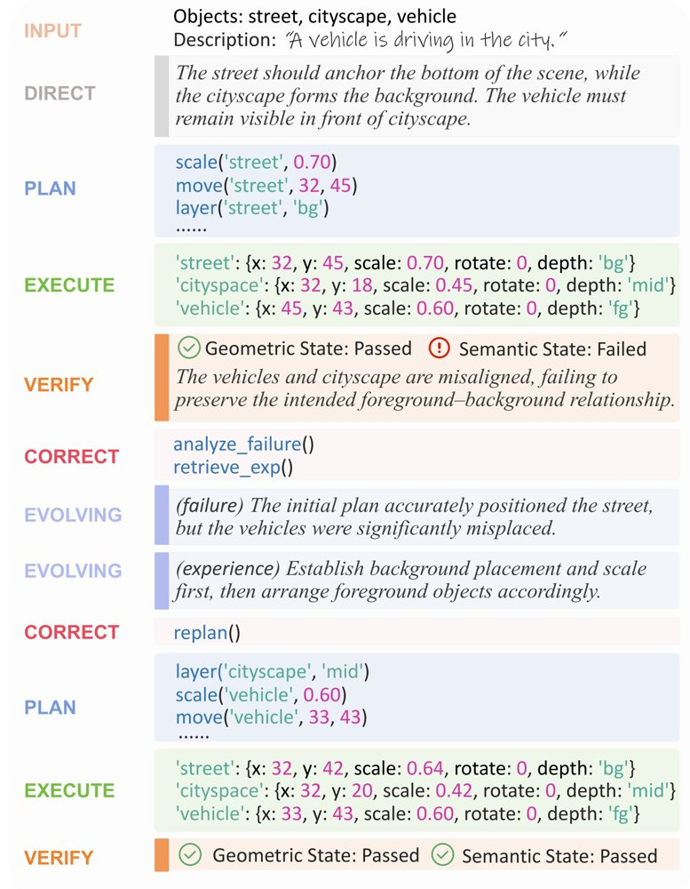
SketchDirector 中的一段真实智能体推理日志，展示智能体如何交替进行布局规划、场景状态更新、几何-语义验证、记忆演化与纠错。
解决了什么问题。现有草图生成方法多依赖图像引导，适用范围基本停留在单个物体或简化场景，文本引导的复杂场景草图仍少有人做。早期方法把整幅场景当成不可分的实体整体优化，物体被隐式编码，无法单独编辑或复用；近期的物体感知方法又把物体当作预设组件或辅助结构，缺少对单个物体的布局规划与迭代优化。
方法。给定场景级文本，LLM 先把场景拆成若干可独立绘制的概念，每个概念由 SketchAgent 生成采样点并用最小二乘拟合成三次 Bézier 曲线草稿，同时给出深度序。随后智能体在 move/scale/rotate/layer/delete/modify 六个原子操作组成的动作库上，以 Plan–Execute–Verify–Correct 闭环迭代布置：几何检查边界与缩放范围 [0.1,1.5]，VLM 从语义、构图、完整度、尺寸、美观五维加权打分，失败轨迹写入短期失败记忆、成功布局以 Jaccard 相似度检索进长期经验记忆。最后做曲线轮廓重采样（de Casteljau 细分，保持原拓扑）与渐进式局部-全局 RFDS 联合优化，只更新控制点、固定曲线顺序以保住结构。
关键结果。在从 MCSketch8K 采样的 30 条多概念提示上，由 Qwen3.7-Plus、Claude-Opus-4-7、Gemini3.1-Pro、GPT-5.5 四个 VLM 评判，SketchDirector 五项指标为语义 0.916、构图 0.772、完整度 0.821、美观 0.836、尺寸 0.821，加细节精炼后升至 0.923/0.788/0.843/0.869/0.842，均高于五个基线；对照的 GPT-5.5 为 0.911/0.730/0.811/0.813/0.820，SVGDreamer 为 0.690/0.546/0.620/0.650/0.695，VectorFusion 仅 0.466/0.252/0.338/0.417/0.412。耗时上 SketchDirector 约 6 分钟、加精炼约 21 分钟，GPT-5.5 与 SketchAgent 约 20 秒，SVGDreamer 约 24 分钟。消融显示去掉规划后语义降至 0.676、构图 0.503，去掉语义验证语义降至 0.603，去掉短期记忆迭代次数从 1.375 升到 2.875；完整模型验证通过率 0.873。用户研究招募 68 人、15 条提示，每项标准收集 5100 份回答，各基线对比中参与者均更偏好本方法。作者同时发布 MCSketch8K，含 1,000 幅场景草图、4,000 余个解耦矢量物体资产、覆盖 800 个物体类别。
为什么值得看。它把场景草图从“整图优化”改成“物体级程序化编排”，输出的 SVG 资产和布局可单独移动、缩放、替换，对动画、概念设计和交互设计这类需要反复改稿的流程更直接可用，MCSketch8K 也为物体级场景草图提供了带布局与操作标注的训练/评测基础。
局限 / 存疑。论文自陈三类问题：难以建模复杂物理与语义关系（如人与水壶的交互、山丘上的城堡），精炼阶段会幻觉出多余实例（例如重复画出一只羊），以及多模态验证与迭代优化带来的计算开销。此外，不加精炼时语义分 0.916 仅比 GPT-5.5 的 0.911 高 0.005，而耗时约 6 分钟对约 20 秒，优势主要体现在构图（0.772 对 0.730）上；评测仅用 30 条提示、且由 VLM 打分，规模与评判独立性都值得进一步检验。
生成式 AI
AI 智能体 Agent / 自主智能
计算机视觉 CV
alphaXiv · arXiv
别只堆算力：让 System-1 先筛一遍
论文主张：通往 AGI 的扩展不只在放大 System-2，还需轻量 System-1 预筛候选交互再执行。
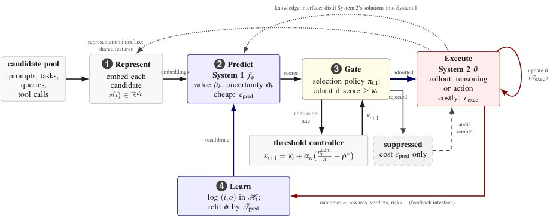
架构示意：候选先被嵌入并由 System-1 廉价打分，分数越过阈值 τ_t 者交 System-2 执行，被抑制者仅付出 c_pred，执行结果回流重训 System-1。
解决了什么问题。当前通往 AGI 的进展主要靠把执行器 System-2 做大：更大模型、更多数据与算力、更长推理链、更多智能体，成本随规模同步膨胀。论文追问，下一阶段是否应改为与 System-1 协同设计——一个轻量、具备语义感知的预测器，在交互真正执行前先评估候选是否值得其代价。
方法。作者给出一个形式化框架：System-1 用廉价特征与历史为每个候选嵌入并打分，门控只放行分数超过阈值 τ_t 的候选，控制器调节阈值以维持目标放行率 π*（阈值更新式）；被抑制的候选只需付出 c_pred，另留一小部分审计样本强制执行以检测预测漏判。执行结果被记录并回流重训 System-1，System-2 也从同一批结果中学习。论文另从信息论与具身（域随机化、尾部风险）等视角解释廉价预测为何可能对昂贵交互有效。
关键结果。论文在第 4.1 节给出核心形式化结论：预测在时间与内存上带来什么收益（Eq. (12)、Proposition 7），以及廉价预测器带来的 regret 风险；信息论视角对应 Proposition 14，效用相关交互的密度定义见 Eq. (14)。论文未给出具体数字：全文没有实验或基准结果，GRESO、MoPPS、GPS、MPTS 等被引工作只作例证而非验证。
为什么值得看。若这一框架成立，扩展 AGI 的杠杆可能从“更大的执行器”转向“更准的预筛器”，这直接对应推理时算力分配、rollout 分配与智能体强化学习的成本结构。它也把“何时不值得执行”变成一个可以被学习和被控制的目标放行率问题。
局限 / 存疑。作者自承三条理论线索是“解释性而非独立贡献”，没有一条是该框架的推导，相关实证工作是“例证而非验证”，全文亦无实验支撑。阈值调节、regret 界与目标放行率在真实负载与非平稳分布下是否仍成立，仍属存疑。
基础大模型 & 基础模型底层研究
AI 智能体 Agent / 自主智能
因果推断、统计学习、理论机器学习
alphaXiv · arXiv
Apriel Voice 27B：语音推理与工具调
Apriel Voice 27B 预览版以 Gemma 4 26B-A4B 为骨干，两阶段适配语音接口，用同一模型完成语
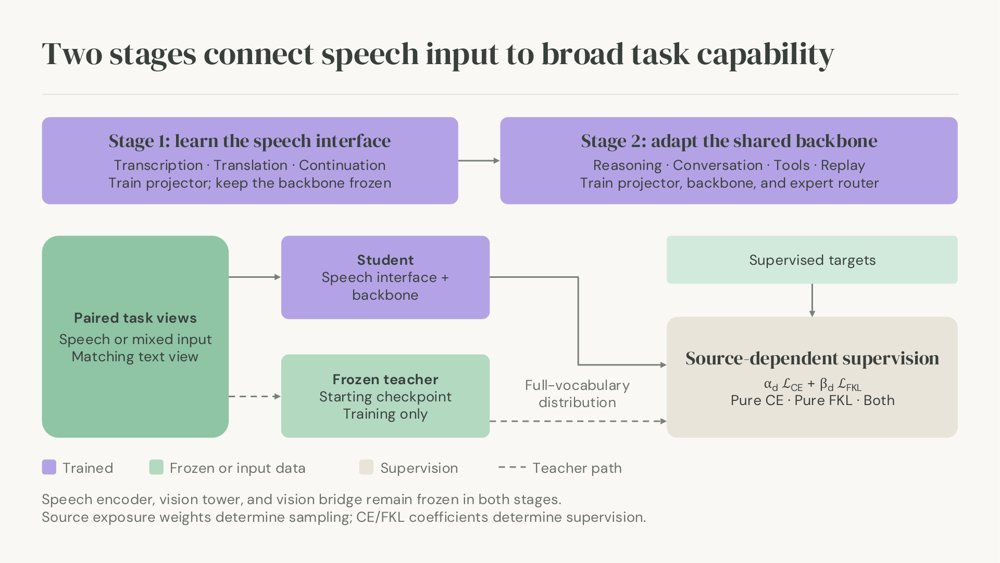
先学语音接口、再扩展任务能力：第一阶段冻结骨干只训投影器，第二阶段在语音任务、合成对话、工具交互与文本回放上同时更新投影器和骨干，并按来源施加交叉熵、前向 KL 或二者组合的监督。
解决了什么问题。语音助手不能只做识别：它要理解请求、对上下文推理、维持多轮对话，并通过工具真正把事办完。传统三级级联把 ASR、LLM 与 TTS 拆成不同组件，语音条件模型则把声学特征直接送进推理器。难点在于给一个已经后训练好的多模态解码器加语音入口，同时不丢掉原有的文本与图像能力。
方法。两阶段训练：第一阶段冻结骨干，只训练约 4770 万参数的语音投影器，把 Whisper large-v3-turbo 编码器的 1280 维特征经 8 帧堆叠和 SwiGLU 映射进解码器空间，用多语言转写、翻译与续写建立语音接口。第二阶段联合更新投影器与语言骨干（含 MoE 路由），数据混合语音任务、内部合成的语音条件对话、工具交互与文本回放，每个来源独立选择交叉熵、前向 KL 或二者加权；冻结的原始骨干作在线教师，配合本地教师 worker、单批前瞻与融合全词表损失完成蒸馏。推理时教师被移除，语音合成器可独立替换。
关键结果。在 thinking 模式下，模型在 Big Bench Audio 得 98.90、BFCL 得 81.13，τ-Voice 平均任务成功率 65.51%，平均延迟 1.91 秒；EVA 的 EVA-A 与 EVA-X 分别为 51.27% 和 74.13%。识别上 LibriSpeech test-clean/test-other 的 WER 为 2.23 和 5.15，全部识别基准平均 WER 12.61；德、法、西译英平均 BLEU 42.87。第二阶段用 8 个节点、16 张教师 GPU 与 48 张学生 GPU，约 3 天完成 52.6473B token 的训练暴露。
为什么值得看。它表明开源的两阶段语音模型可以把语音理解、推理和工具调用放在同一个骨干上，并在 τ-Voice 上以 65.51% 的成功率和 1.91 秒延迟接近专有系统，同时语音合成可以独立更换。
局限 / 存疑。论文自述以英语语音理解与对话为主，多语言仅靠自动语音翻译评测，跨语种鲁棒性不均。内部与公开结果在提示、判分、推理预算和任务上限上不一致，聚合分数不构成配对显著性检验；合成数据与蒸馏可能传播错误目标，且没有对单项数据或监督选择做因果消融。冻结视觉塔也不保证图像推理不变——九项图像基准中三项高于 Gemma 基线、六项低于基线。
基础大模型 & 基础模型底层研究
语音与音频 AI
alphaXiv · arXiv
CWAM：用稀疏路由分离驱动动作的潜变量
世界动作模型要预测整幅场景，但只有一部分潜变量驱动动作。作者用稀疏约束识别这部分变量，并在 Cosmos 3 上验证。
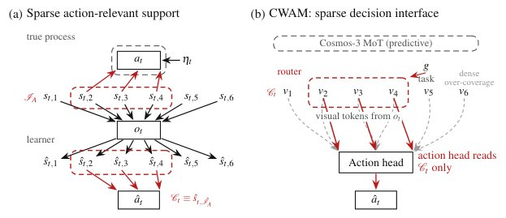
动作只依赖潜状态中的一个块；CWAM 在 Cosmos 3 上把该块的估计经稀疏路由送到动作头，同时保留世界建模的稠密路径，即图中灰色虚线。
解决了什么问题。世界动作模型（WAM）从观测中学习潜变量，既用来预测场景演化，也用来生成动作。预测必须覆盖整幅场景，而真正导致动作的只是其中一部分潜变量。仅拟合演示并不保证动作只来自这部分因果潜变量——模型完全可能把桌布、杂物等干扰因素混进动作路径。
方法。作者证明：在稀疏约束下，用于生成动作的潜变量是动作相关潜变量的可逆函数，状态到动作的依赖结构在潜变量置换意义下可识别，且不要求时间依赖或干预数据。据此提出 CWAM：保留 Cosmos 3 原有的联合整流流训练与世界建模目标不变，向动作头加一条稀疏路由路径，用 token 级稀疏损失把路由质量压到少量干净上下文 token 上。
关键结果。在 n=20 个潜变量、|I_A|=4 个驱动动作的合成设置中，CWAM 稀疏选块的相关 R² 为 0.9957±0.0014，干扰超额 Δ_nuis 为 0.039±0.093，接近零；RoboCasa365 的 17 个任务上宏观成功率从 0.24 升到 0.43（13 个任务提升），LIBERO 四个 suite 均优于匹配基线，真实 Franka 堆叠任务多数试验成功而基线不到一半。在成功率最高的 4 个 RoboCasa365 任务上，仅保留路由 token 平均成功率 60.3%，随机等量 token 只有 24.5%。
为什么值得看。把“预测整幅场景所需的潜变量”与“真正驱动动作的潜变量”分开，意味着动作头可以更紧凑、更可审计，也更有希望在演示分布之外保持正确。论文为 WAM 的因果理解提供了一个可检验的理论起点。
局限 / 存疑。理论依赖非退化条件（每个动作维度的雅可比行需张成真实父坐标，并满足避免抵消的包含条件），且只给出块级可识别性，无法确定单个潜变量；实验上 RoboCasa365 有 4 个任务成功率下降或持平，部分帧的路由权重也分散到机械臂和墙壁。
强化学习 RL & 序列决策
因果推断、统计学习、理论机器学习
机器人 & 具身智能
alphaXiv · arXiv
拆解训练-推理不匹配：DLC修正策略滞后
论文将LLM RL的训练-推理不匹配拆为数值差异与策略滞后，提出DLC分别中心化、裁剪并重同步。
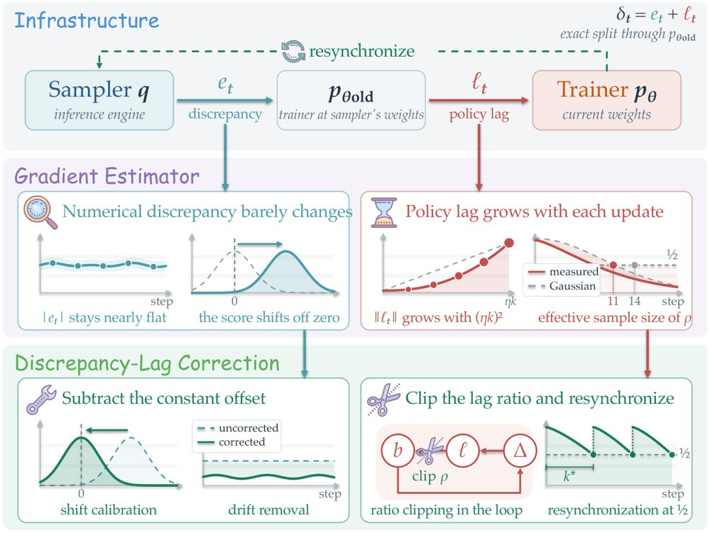
训练-推理不匹配的起源与DLC修正：在采样器权重处前向将误差拆为数值差异与策略滞后，DLC中心化前者、裁剪后者并在有效样本量低于一半时重同步。
解决了什么问题。LLM的on-policy强化学习实际由推理引擎采样、独立训练器算梯度，引擎数值差异和异步采样的陈旧权重使训练数据变成off-policy。已有重要性采样、score centering和PPO等修正对不匹配来源敏感：同一方法在量化采样器下稳定，在陈旧采样器下可能失效，反之亦然。论文追问：不匹配来源的哪个性质决定了它需要哪种修正。
方法。作者在采样器权重处让训练器做一次前向，把每个采样token的误差精确分解为数值差异和策略滞后。数值差异来自引擎且近似恒定，策略滞后由训练器自身更新产生并通过残差偏置进入下一轮更新，形成反馈环。据此提出DLC：中心化数值差异、用PPO clip裁剪滞后比，并在滞后比的有效样本量低于1/2时把训练器权重同步给采样器。
关键结果。在Qwen3-0.6B的陈旧采样器下，DLC第40步偏离为噪声底的1.9倍，importance sampling with centering为2.1倍，score centering为31.7倍且测试准确率仅12.2%；DLC准确率31.7%，on-policy为46.5%。Qwen3-1.7B陈旧采样器下DLC至第40步保持在噪声底1.2倍以内、结束时0.6，测试准确率51.9%，on-policy为57.6%；importance sampling在第11步有效样本量跌破1/2，偏离到第30步达噪声底152倍。Qwen3-8B上DLC偏离3.1倍、准确率49.6%，on-policy为55.3%；连续异步下DLC为1.2倍和55.9%。
为什么值得看。把不匹配拆成固定的数值差异与自诱导的策略滞后，能解释为何同一修正对量化与异步一个有效、一个失效。DLC用有效样本量给出明确的重同步判据，对LLM RL训练系统的稳定性有直接工程意义。
局限 / 存疑。实验限于Countdown任务和40步短训练：Qwen3-0.6B/1.7B每个配置三次，Qwen3-8B与连续异步每组仅一次，长期大规模行为尚未验证。DLC每步需在采样器权重处额外前向，Qwen3-1.7B陈旧采样器下步时约113.2秒，而on-policy为50.4秒；重同步阈值1/2和clip 0.2等超参也仍是设定值。
基础大模型 & 基础模型底层研究
强化学习 RL & 序列决策
AI 工程、推理部署、系统方向
alphaXiv · arXiv
为离散扩散模型构造概率流ODE采样器
论文提出指数残差流ERF，为离散扩散模型给出确定性ODE采样，并证明其保持原扩散模型的边缘分布。
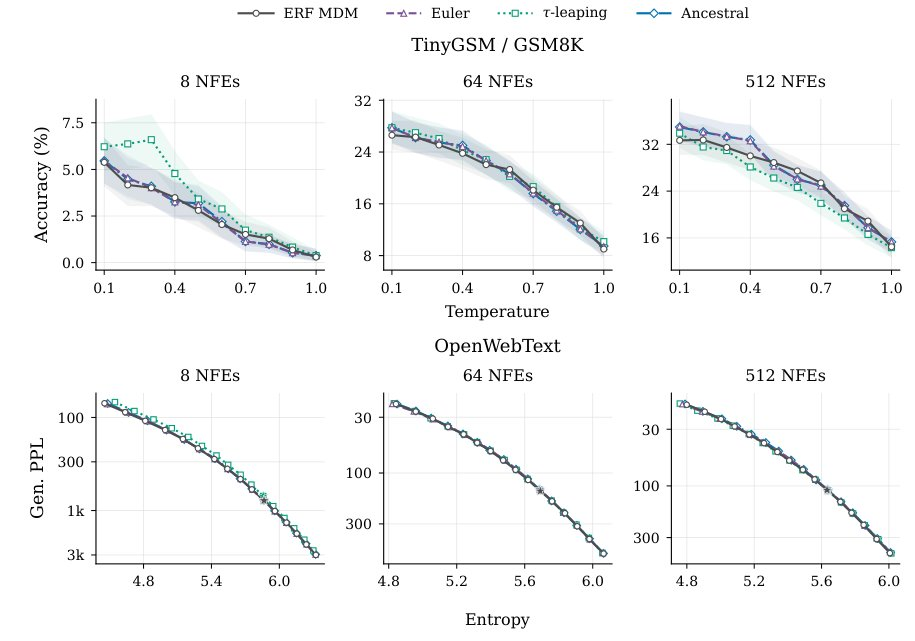
ERF与ancestral sampling、Euler、categorical τ-leaping在masked扩散上的对比：上排为GSM8K在不同采样温度下的准确率（含95% bootstrap区间），下排为OpenWebText的熵与GPT-2 Large生成困惑度（对数反向轴，星号标出温度1）。
解决了什么问题。连续扩散模型的边缘分布可由概率流ODE确定性复现，这为加速采样和一致性蒸馏提供了基础。但离散扩散模型是否存在对应的ODE形式，此前没有得到明确回答。
方法。作者为每个token和位置的离散状态增加一个连续残差变量，残差按分段定义的ODE确定性演化，其向量场依赖当前离散状态以及给定扩散模型的前向、后向速率矩阵。当某个残差归零时离散状态发生跳变，作者证明该构造保持原扩散模型的边缘分布，并给出可实现的离散化方案，分别针对masked扩散与uniform扩散做了特化。
关键结果。论文摘要声称，ERF在代码与文本生成等多项基准上优于此前方法，但摘要未给出具体数字。图注显示对比对象为ERF、ancestral sampling、Euler与categorical τ-leaping：上排是GSM8K在不同采样温度下的准确率（附逐点95% bootstrap置信区间），下排是OpenWebText上的熵与GPT-2 Large生成困惑度，困惑度轴取对数并反向。
为什么值得看。若确定性轨迹确实成立，离散扩散就能像连续扩散一样借用ODE求解器加速采样，并支持一致性蒸馏这类少步生成技术。这把连续扩散的工具链迁移到了文本、代码等离散序列领域。
局限 / 存疑。离散状态在残差归零时跳变、向量场分段定义，实际采样精度会受步长与离散化方式影响，温度敏感性也需要在图示范围之外进一步检验。摘要只给出定性结论，并未报告采样步数、加速比以及与一致性蒸馏结合后的具体收益数字。
生成式 AI
alphaXiv · arXiv
DriftSpread：在线RL的一步生成策略
提出一步生成策略 DriftSpread：评论家引导的 Drift 更新价值，熵诱导的 Spread 扩展分布。
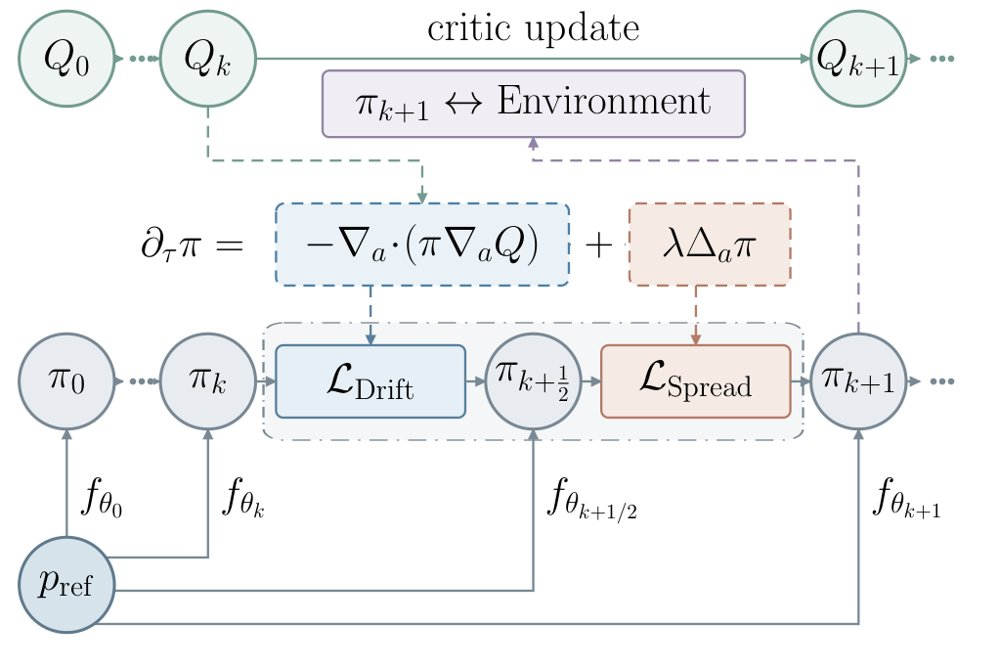
DriftSpread 概览：(a) critic 学习与顺序 Drift–Spread actor 更新交替，Drift 用动作回归、Spread 用分布匹配；(b) 示意负最大熵目标下 Drift 将动作推向更高价值、Spread 扩展分布以体现熵。
解决了什么问题。扩散与流策略能表达多峰动作分布，但通常需要迭代采样，训练和推理成本高。最大熵 RL 需要利用熵项，而隐式 actor 不提供可处理的密度或 score，难以直接计算熵。
方法。方法基于 Drifting 的能量视角，从负最大熵目标推导出评论家引导的 Drift 与熵诱导的 Spread。每个周期先让动作沿 critic 梯度移动并用回归拟合，再向更新后 actor 的动作加噪、用 MMD/特征函数匹配其分布，从而在同一个 actor 上顺序学习。推理时只需一次前向。
关键结果。在五个 MuJoCo-v3 任务、每任务 10^6 次交互和 5 个随机种子下，DriftSpread 在 13 个基线中取得最高聚合归一化回报；单动作推理耗时 0.15 ms，低于 DIME 的 1.24 ms 和两步 MFPO 的 0.36 ms。玩具高斯实验中，顺序拟合的 KL 为 0.000422，联合拟合为 0.512165；步长从 0.01 降到 0.000625 时，顺序拟合 KL 从 0.001788 降到 6.29×10^-6，联合拟合仍约 0.51。
为什么值得看。若能在保持表达力的同时把动作生成压到一次前向，生成式策略在在线 RL 中的训练与部署成本会更可接受，也为免密度/score 的最大熵策略学习提供了一条路径。
局限 / 存疑。评估仅限 MuJoCo 仿真，尚未验证真实控制中的观测噪声与动力学变化；扩散噪声分布和尺度在训练中固定，收敛保证也只覆盖固定 critic、精确拟合及小步长/长时间极限。
强化学习 RL & 序列决策
alphaXiv · arXiv
ReLift：把稠密 3D 跟踪变为轨迹修复
冻结的 2D 跟踪器与深度模型把像素提升成 3D 轨迹，小型校正器负责修补缺口与错误——ReLift 在 WorldTr
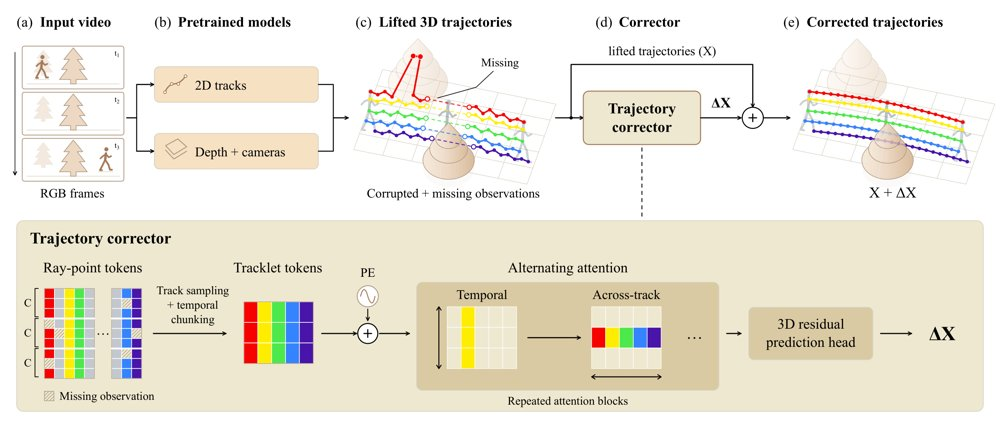
ReLift 推理流程：冻结的 2D 跟踪器与几何模型把视频观测提升为含噪、带缺口的 3D 轨迹，校正器再预测逐帧 XYZ 残差得到最终轨迹。
解决了什么问题。稠密单目 3D 跟踪要同时解决跨帧对应、深度估计和遮挡下的运动推断。现有方法通常用一个网络端到端联合学习这三件事，但 4D 监督数据稀缺，训练目标负担很重。论文则主张把前两项交给预训练的 2D 跟踪器与几何模型。
方法。ReLift 用 2D 跟踪器给出的像素轨迹确定视线方向、用深度模型给出沿视线的距离，把两者合成 3D 提升轨迹；被标记为遮挡的观测被丢弃，缺口用插值初始化。校正器对每条轨迹的 token 交替做时间注意力和跨轨迹注意力，输出逐帧 XYZ 残差并加回初始化轨迹。训练时直接在 PointOdyssey 的干净 3D 轨迹上注入随机的射线、距离和可见性误差，不运行跟踪器、深度模型或渲染器。
关键结果。在 WorldTrack 上，CoWTracker + 4RC 几何的平均 APD3D 达到 89.01（全部点）和 86.95（动态点），比全部点最强基线 4RC 高 2.1 点、比动态点最强基线 V-DPM 高 3.0 点。校正相对初始化提升平均增加 1.6–3.6 点，CoWTracker + VGGT-Ω 的全部点 APD3D 从 84.9 升到 87.5。VGGT-Ω 配置完整流水线耗时 7.3–11.7 秒，比 4RC 的 31.8 秒快 2.7–4.4 倍。
为什么值得看。把稀缺的 4D 监督集中在轨迹修复上，使同一组权重能跨不同跟踪器和几何提供方迁移，未来任一组件进步都可直接转化为收益。
局限 / 存疑。性能仍受输入几何质量制约——Kubric 上使用 DA3/VGGT-Ω 几何时全点 APD3D 为 67.29/66.57，明显低于 4RC 的 85.33，且训练未显式模拟相机位姿误差与持续的身份切换；校正器按轨迹组处理，预测也可能受同组其他轨迹影响。
计算机视觉 CV
alphaXiv · arXiv
分层预见加动作引导检索，VLA操作成功率提升
HiFOR让VLA同时预测短期动态、语义里程碑与最终目标，并按当前动作需求检索未来信息。
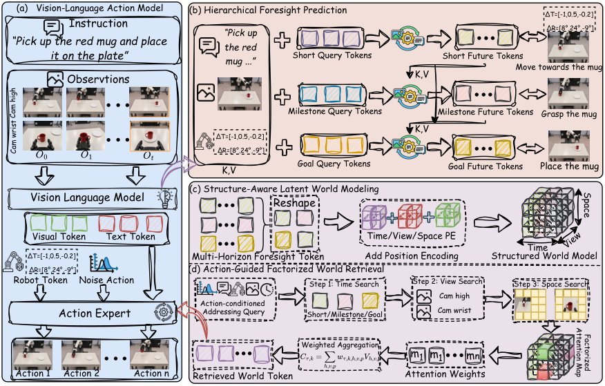
HiFOR总览：VLA在动作生成中接入分层预见预测与动作引导的世界检索，其中(b)按分层依赖预测短期、里程碑与目标未来，(c)沿尺度、视角、空间组织未来潜表示，(d)用去噪感知的因子化注意力检索与动作相关的未来信息。
解决了什么问题。现有带未来预测的VLA方法大多只做单一时间尺度的预见：短期预测擅长刻画局部运动却与任务目标脱节，长期预测给出子目标却缺少连续状态建模，两者割裂导致跨时间尺度的依赖关系难以建立。更关键的是，预测出的未来图像或隐表示通常被直接当作额外条件塞进策略，没有区分不同时间尺度、相机视角和空间区域对当前动作的相关性差异。
方法。作者提出分层预见预测，用分层依赖掩码让短期、里程碑、最终目标三组可学习查询在共享预测模块中按 s≺m≺g 的顺序逐步扩展注意力可见性，并以冻结DINOv2 ViT-L/14的多视角4×4 patch特征作为视觉监督、以未来机器人状态序列辅助短期预测。随后结构感知潜世界建模把预测表示沿时间尺度、视角、空间三个维度组织成结构化潜世界，并额外聚合出尺度级和视角级特征。动作引导因子化世界检索则在去噪每一步用动作专家的隐表示构造查询，沿这三个维度做因子化注意力，动态挑选与当前动作最相关的未来信息注入动作生成。
关键结果。在LIBERO上平均成功率98.3%，高于π0.5的96.9%，其中LIBERO-Long从92.4%提升到95.8%（增益3.4个百分点），Spatial达99.4%。在RoboTwin 2.0的Hard设置下20个任务平均成功率49.40%，比π0.5的40.35%高9.05个百分点。真实世界6个任务平均成功率81.7%，比π0.5高11.0个百分点，叠块任务提升16.0个百分点。消融显示短期预见把RoboTwin平均从40.35%提到44.15%，加入里程碑和目标预测后达45.60%和46.95%，再加动作引导检索升至49.40%（额外2.45%）。短时预测步长取5步时LIBERO-Long为95.8%、平均98.3%，优于RGB像素预测的94.2%和97.7%。
为什么值得看。它把「预测未来」从单一尺度的辅助条件改造成可按动作需求检索的结构化信息源，为长程操作任务中如何组织和调用预见信息提供了一个可复用的设计范式。
局限 / 存疑。真实世界验证仅限AgileX Piper单臂平台上的6个任务、每任务50次 rollout，规模有限；短时预见的最优步长（5步）与LIBERO的策略更新间隔对齐，这种依赖在更新频率不同的平台上是否成立论文未给出具体数字。此外里程碑标注依赖规划代理自动定位并需人工复核低置信度样本，且消融中单独加入目标预测的增益相对较小。
计算机视觉 CV
机器人 & 具身智能
alphaXiv · arXiv
腾讯WeFair按反馈保真度分阶段训练2B改写模型
腾讯WeFair按反馈保真度分阶段训练2B改写模型，离线总体准确率72.81%，线上CTR相对提升2.951%。
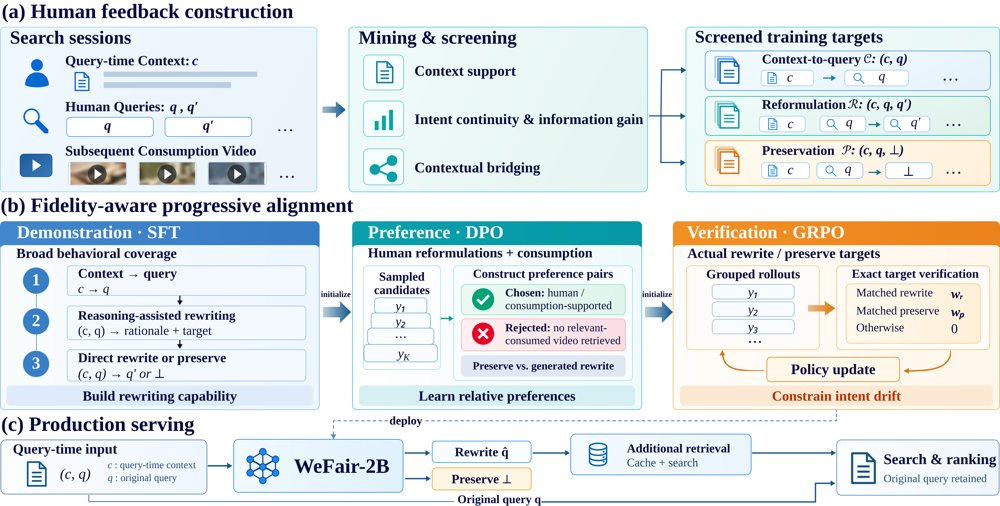
图1：微信短视频搜索中的意图漂移示例——原查询「可丽饼」被导向食谱而非用户想看的吃播视频，WeFair用演示、偏好、验证三级的保真度反馈来抑制这种偏移。
解决了什么问题。短视频搜索中的查询往往含义模糊，需要小型改写模型在严格延迟限制下从上下文恢复用户的即时意图，并判断该改写还是该保留原查询。已有的LLM蒸馏方法依赖合成推理轨迹和后续消费行为对齐，而过度强调消费容易把改写引向更吸引点击的内容，偏离用户当下的真实需求，形成意图漂移。
方法。作者把人工反馈按「多直接反映个性化意图」分为演示、偏好、验证三级，并从搜索会话中挖掘真实查询与用户改写，先经规则过滤再交由三个大模型多数投票筛选上下文支撑。训练分三阶段递进：课程式SFT从上下文到查询预测、带推理的改写、直接改写逐步收敛；DPO用后续消费结果构造偏好对；GRPO只对与人工改写或保留标记完全一致的回答给予奖励。推理时模型直接输出改写或保留标记，不生成思维链。
关键结果。离线测试中WeFair-2B总体准确率72.81%、一致召回83.95%（均为表中最高），4B版本达73.48%，高于Gemini-3.1-Pro的64.42%与DeepSeek-V4.1-Flash的62.55%；2B的意图漂移率为5.36%，低于WeWrite-2B的16.45%与AWHCP-8B的13.34%。从0.8B到2B总体准确率提升5.91个百分点，2B到4B仅提升0.67个百分点。推理时2B模型平均解码7.60个token、单样本0.316秒，而WeFair-CoT-2B为26.65个token、0.795秒。10天线上A/B测试（对照为WeWrite）显示CTR相对提升2.951%、有效播放率提升2.593%、查询改写率下降2.350%（P<0.01），P95推理延迟81毫秒，端到端搜索延迟增加16毫秒；系统日均服务超过1亿次查询。消融显示SFT单独总体准确率55.48%，加DPO为56.54%，加GRPO为70.35%，三阶段完整为72.81%。
为什么值得看。它给出一个可操作的工程结论：训练信号的「保真度」应当与训练阶段匹配，宽松的上下文监督适合打基础，而最终的在策略优化必须锚定高保真的人工目标。对需要在线上毫秒级预算内做个性化改写的搜索系统，2B级别的直接输出模型已可与大模型CoT方案在总体准确率上竞争。
局限 / 存疑。离线评价高度依赖一个LLM裁判（作者报告其与人工判断一致率96.6%、Cohen's Kappa为0.919），严格精确匹配奖励的负向纯度低于RM增强方案，说明它会把一些可接受的替代表达判为负例；线上收益只来自单一平台10天的A/B测试，案例分析中亦有一例因改写丢失「XX市」而退化。此外，保留标记比正确改写更易生成，存在策略偏向保留的奖励攻击风险，论文只称通过数据配比与奖励设置缓解，未给出定量上界。
基础大模型 & 基础模型底层研究
强化学习 RL & 序列决策
alphaXiv · arXiv
用视频模型的时间先验统一条件图像生成
FrameForge 冻结视频扩散骨干，按输入选择虚拟时间间隔并插入无监督推理隐变量，统一三类条件图像生成任务。
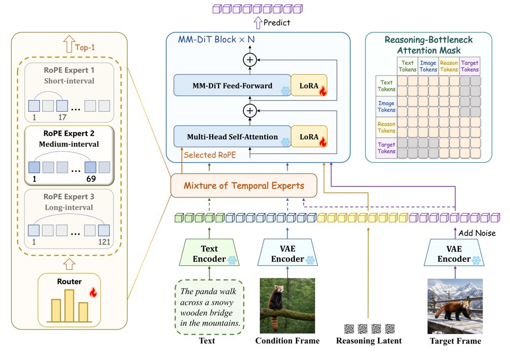
FrameForge 总览：异质条件图像生成被表述为预训练视频扩散模型的目标帧预测，MM-DiT 骨干处理文本、条件、推理与噪声目标 token，MoTE 在每步去噪选择不同虚拟间隔的时间 RoPE 配置，CoTR 通过注意力更新噪声初始化的中间隐变量，中间训练阶段用随机注意力掩码阻断文本/条件与目标的直接注意力。
解决了什么问题。统一条件图像生成要求同一个模型在遵循文本指令的同时，保住参考主体的身份、结构图的几何或编辑中不该改动的内容，但不同任务对「条件和目标差多远」的要求差别很大。现有做法要么把条件和目标放在固定的时间位置上，要么用控制分支、轻量适配器把条件当作辅助信号注入，都没有显式建模条件与目标的差异强度以及条件如何转变成目标。作者观察到，编辑、主体驱动生成、canny-to-image 三类任务的条件-目标 LPIPS 分布明显不同，却又与自然视频中不同时间间隔帧对的分布范围大幅重叠，这提示可以用视频模型的时间变换先验来解释这些关系。
方法。FrameForge 以 HunyuanVideo1.5 的首阶段视频扩散模型为骨干，冻结骨干与 VAE，只插入一个在所有任务间共享的 LoRA，并把条件图像生成表述为「目标帧预测」。Mixture of Temporal Experts（MoTE）构造多个对应不同虚拟间隔的时间 RoPE 专家（默认等效视频帧跨度为 17、69、121，对应隐空间跨度 5、18、31），用轻量 router 根据文本、条件与噪声目标表示做样本级 Top-1 路由，并以直通估计器端到端训练、加上负载均衡损失防止路由塌缩。Chain of Temporal Reasoning（CoTR）在条件与目标之间插入一个高斯噪声初始化、无显式监督的推理隐变量，在中间训练阶段以概率 0.5 施加推理瓶颈注意力掩码，切断目标 token 与文本/条件 token 的直接注意力，迫使信息经由该隐变量传递。
关键结果。在 DreamBench 主体驱动生成上，FrameForge 的总体分 O 为 0.739（SC 0.739、PQ 0.783），论文称比 ChronoEdit 的 0.729 提升 1.37%，但主体一致性一项排第二。COCO2017 canny-to-image 上 SSIM 为 0.447，比次优的 EasyControl（0.417）相对提升 7.2%，CLIP-T 为 0.323，FID 为 23.47。GEdit-Bench 上总体 G-O 为 6.12（ChronoEdit 5.08），Motion Change 的 G-O 为 6.84（ChronoEdit 5.76），但两项仍低于 GPT-4o 的 8.01 和 7.81。训练使用每任务 170K、共 510K 样本，分辨率 512×512，可训练参数 182M（LoRA rank 与 alpha 均为 32），在两张 A800 上训练 12,000 步、约 6 天。换到 HunyuanVideo1.0 骨干后，主体驱动分从 0.699 升到 0.736，编辑分从 4.38 升到 5.00，canny FID 从 24.52 降到 23.07。
为什么值得看。它把「条件到目标差多远」变成一个可按样本、按去噪步连续选择的时间位置先验，为统一条件生成提供了一条不需要任务专用适配器的参数高效路线。这也给出了一个可检验的观点：视频模型学到的时间变换先验，可以按输入重新组合，而不只是一个固定偏移。
局限 / 存疑。canny-to-image 的 FID 23.47 仍差于 ControlNet 的 20.42，作者自己也承认 FID 与人类判断存在分歧；实验只在 512×512、三个基准上做，DreamBench 仅 30 个主体，GEdit 英文子集 606 条，且评分依赖 GPT-4o/4.1 打分。消融显示，不添加模块的共享 LoRA 会让编辑分从任务专用的 5.99 掉到 4.94，说明任务干扰只是被缓解而非消除；专家数增到 5 或 7 时，其他任务指标反而下降。
基础大模型 & 基础模型底层研究
生成式 AI
计算机视觉 CV
alphaXiv · arXiv
VaM：值缓存与在线RL后训练机器人策略
VaM 将近期值预测缓存为策略输入，结合离线演示与在线真实世界 RL 联合更新；三类操作任务平均绝对成功率提升 29.4
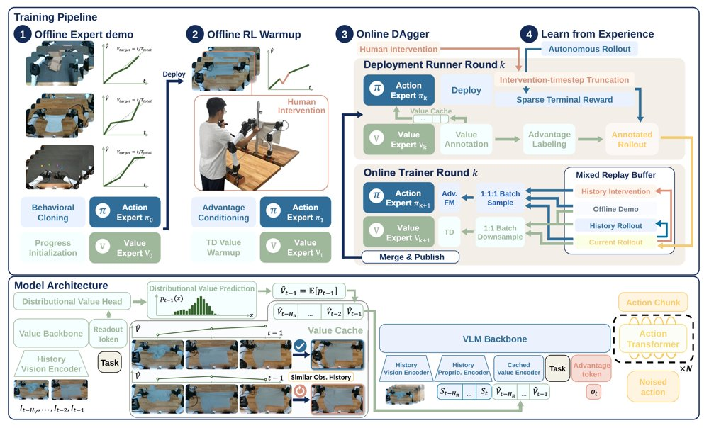
VaM 的四阶段离线到在线训练流程，以及分布值专家如何把历史值预测转成值缓存来条件化动作专家。
解决了什么问题。真实世界后训练通用机器人策略面临两个问题：部分可观测使视觉相似状态需要不同动作，离线后训练又延迟部署反馈。现有值函数多用于过滤或加权，很少直接作为策略输入，且在线更新频率受数据复用限制。
方法。VaM 用分布值专家预测近期任务进展并缓存为动作专家的额外输入，同时在四阶段流程中从离线演示、离线 RL 预热推进到 Online DAgger 和 LfE。在线阶段混合离线演示、off-policy 干预轨迹与当前 on-policy rollout，联合更新策略和值函数，并用稀疏结果奖励继续学习。
关键结果。在 Box Assembly、Laundry Folding、Magnetic Bus Assembly 上，value caching 相对无缓存变体在最终三个 checkpoint 取得 29.4% 平均绝对成功率增益（全部 LfE checkpoint 为 31.3%），成功率分别为 96.7%/88.9%/76.7% 对 81.7%/48.9%/43.3%。在线自主学习相对匹配离线 RL 平均增益 32.8%；相同梯度步预算下在线调度完成 8× 策略迭代，每梯度步记录时间平均降低 57.8%（Box Assembly 为 16 次对 2 次）。
为什么值得看。把值预测同时用作监督信号和策略输入，为缓解长时程操作中的部分可观测提供了一条直接路径；在线闭环与混合数据复用也提升了真实机器人后训练的样本效率和迭代频率。
局限 / 存疑。值缓存依赖值函数紧跟任务进展，因此离线 RL 预热对稳定在线训练必要，缓存质量受值预测质量限制。实验目前仅限单机器人，尚未验证多机器人共享数据时的扩展性。
强化学习 RL & 序列决策
机器人 & 具身智能
alphaXiv · arXiv
WorldBridge：视频拓宽机器人任务泛化
论文量化视频覆盖与动作监督对分布外任务的各自贡献，并提出世界动作模型 WorldBridge。
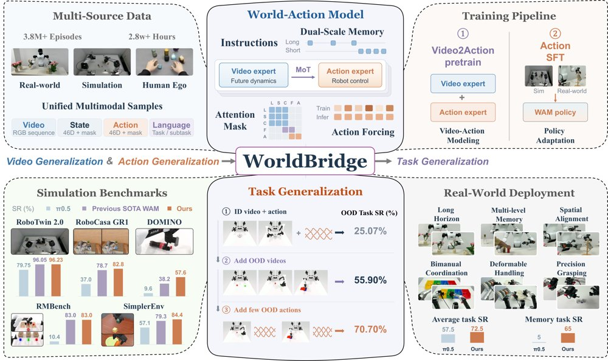
WorldBridge 总览：融合异构数据源、两阶段训练，底部给出不同视频与动作监督下的任务泛化结果、基准成绩及真机部署表现。
解决了什么问题。机器人需要在训练任务之外执行新任务，但现有 VLA 研究多集中在物体摆放、视角、光照等执行条件鲁棒性上，而非任务本身的泛化。世界动作模型（WAM）同时做视觉预测与动作生成，被视为通向任务泛化的路径；但视频泛化与动作泛化各贡献多少、二者之间的「视频到动作桥」何时成为瓶颈，此前缺少拆分测量。
方法。WorldBridge 采用 Mixture-of-Transformers，视频专家与动作专家各自持有参数，通过联合自注意力交换信息；结构化注意力掩码把信息流从历史观测与当前帧导向预测的未来视频，再导向动作。训练使用联合 flow matching，并加入短、长两个时间尺度的视觉记忆和 action forcing（同一动作块内不同 token 赋不同噪声等级）。数据侧搭建统一管线，把异构机器人轨迹与第一人称人手演示映射到 46 维动作表示，用维度有效性掩码保留部分监督。
关键结果。在 RoboTwin 2.0 上，仅用分布内视频-动作监督时 ID 成功率 91.85%、OOD 仅 25.07%；加入 OOD 视频但动作标签仍限于 ID 后 OOD 升至 55.90%，每任务再加 1 条动作演示达 70.70%，5 条 84.67%，20 条 90.03%。全量数据下平均 96.23%（Clean 96.16%、Randomized 96.30%），Clean2Random 80.9%，RoboCasa GR1 TableTop 82.8%，DOMINO Level-1 为 57.6% SR / 64.6 MS，RMBench 83.0%，SimplerEnv-WidowX 84.4%，RoboDojo 平均 26.03 分 / 19.15% SR；真机六任务平均 72.5%，对比 π0.5 的 57.5%。
为什么值得看。它拆分并量化了「多拍视频」与「少量动作标注」对任务泛化的边际收益，给出了可操作的数据配比结论：视频扩展覆盖范围，稀疏动作补足视觉到动作的接地。
局限 / 存疑。任务泛化的定量结论只在 RoboTwin 2.0 单一基准和固定 ID/OOD 划分上得到，且无 OOD 动作标签时 55.90% 仍远低于 ID 的 91.96%，说明桥接并不完整。真机每任务仅 20 次试验、螺丝分拣成功率 55%，而推理加速中复用早期视频特征只是对联合去噪的近似。
生成式 AI
计算机视觉 CV
机器人 & 具身智能
alphaXiv · arXiv
频域解耦双参考改善个性化生成文本对齐
论文提出Dual-FDM，用DCT掩码在频域分离定制/颜色参考与风格参考，缓解双参考频带纠缠造成的文本提示压制。

图1展示Dual-FDM_cust用定制参考与风格参考、Dual-FDM_cost用颜色参考与风格参考生成的个性化图像示例。
解决了什么问题。个性化图像生成需同时保持文本对齐与参考相似，但图像定制常使背景文本提示被密集参考压制，风格迁移又会让风格信息泄漏到前景。作者将成因归为去噪过程中低、中、高频段的纠缠：早期高噪声阶段低中频占主导并压制文本引导。
方法。Dual-FDM把参考前景/背景经DCT变换后用掩码分离低中高频。定制风格迁移用定制参考前景的中频替换风格参考背景的中频，颜色风格迁移用颜色参考前景与背景的低频替换风格参考背景的低频。替换后的频带作为解耦交叉注意力的key/value重建查询，并用信息熵比自适应划分早晚去噪阶段。
关键结果。表1中Dual-FDM_cust的CLIP-T为0.3194、CLIP-TC为0.5031、HPS×10为2.6007，均高于表中对比方法；表2颜色类CLIP-TS为0.5015、CLIP-S为0.7178、DINO-S为0.4970。推理时间10.26s、显存12.48GB。消融显示自适应时间步结果落在0.4与0.5固定比例之间。
为什么值得看。把双参考生成中的频带纠缠显式拆开，为「定制+风格」和「颜色+风格」两类任务提供统一的频域替换框架。
局限 / 存疑。作者指出，当风格参考包含极稀疏的线条图案时，中频定制线索可能衰减高频风格细节，导致风格信息不完整；论文也未报告误差棒或统计显著性检验（检查表填 N/A）。
生成式 AI
alphaXiv · arXiv
像素扩散Transformer：自适应预测目标
MFlow 沿数据主方向连续插值 x0 与速度预测，免去手工选秩；ConvRefiner 事后补回高频。

MFlow 公式概览：按数据主方向学习连续插值权重的参数化框架，用以取代此前的固定参数化。
解决了什么问题。JiT 证明朴素扩散 Transformer 可以在像素空间直接生成，其做法是把常用的速度预测换成干净图像（x0）预测；但采样时仍需把 x0 转成速度，在低噪声端这一步病态。AsymFlow 用固定秩 r 的硬截断缓解该问题，可秩要按数据集手工扫，论文称其调一个秩就需要 6 次训练。此外，作者发现 JiT 家族模型无论用哪种参数化，生成图像在 0.5–0.7 径向频率段都相对真实图像存在高频缺失。
方法。MFlow 把二值投影算子换成对称的加性算子 M = U diag(m1…mD) Uᵀ（U 为 patch-PCA 基），每个主方向的增益 mi∈[0,1] 由 sigmoid(φi) 参数化、与生成器联合训练，回归目标为 uG = x0 − Mε；由于相应线性系统行列式恒为负，速度可以被精确恢复，因此训练仍用标准的速度空间 flow-matching 损失。ConvRefiner 是一个轻量残差卷积模块，在冻结扩散主干的前提下事后训练，用感知损失与对抗损失（PatchGAN，仅作用于近干净样本）修正 x0 预测。
关键结果。ImageNet 256×256 的 B 级模型上，不加 LPIPS 时 MFlow 的 FID 为 3.74，反而不及 JiT 的 3.70 与 AsymFlow 的 3.59；加上 LPIPS 后 MFlow 降到 3.33，优于 JiT 的 3.42 和 AsymFlow 的 3.40。H 级（953M 参数、363 GFLOPs）上 JiT、AsymFlow、MFlow 分别为 1.82、1.79、1.81。UCF-101 视频 B 级 FVD 为 122（JiT 152、AsymFlow 126、Wan2.1 latent 169），L 级为 97，再加事后 Framewise-LPIPS 后为 94。文生图方面，1.1B 的 MFlow-L 在 GenEval、DPG、PRISM 上分别为 0.8843、84.70、73.9，13B-MoE（2.9B 激活）的 XXL 模型为 0.8898、86.10、75.2。高频缺口方面，JiT-H 的平均径向功率亏损为 −6.69 dB、MFlow-H 为 −6.63 dB，加上 ConvRefiner 后收紧到 −1.29 dB，同时 FID 保持 1.81 不变；该模块仅在已训练 600 epoch 的冻结模型上再训 30 epoch（约 5%）。
为什么值得看。它把「用 x0 还是用速度」从一次性超参选择变成可端到端学习的逐方向连续权重，省掉参数化搜索，并给出了可解释的 M-curve 观察：模型容量越大、越多方向偏向速度预测，而数据表征与目标决定这些方向如何分配。同时它指出高频缺失是 JiT 式大 patch 主干的结构性问题，可以用一个事后的小卷积模块与参数化改进互补地修补。
局限 / 存疑。作者自己承认，相对强固定参数化的提升有时相当有限：B 级不加 LPIPS 时 MFlow 落后于 AsymFlow，H 级也不及 AsymFlow 的 1.79；增益与网络联合优化会让回归目标持续移动，训练损失更低却未稳定转化为更好的 FID。ConvRefiner 虽显著补齐高频，FID 几乎不变，说明 FID 对这类局部频率统计并不敏感，真实感知收益仍需纹理敏感指标与人工评测确认。
alphaXiv · arXiv
人形机器人闭环规划，扰动下成功率93.1%
港中文等提出ReactiveBFM，让Unitree G1边执行边重规划，扰动下仿真成功率93.1%。
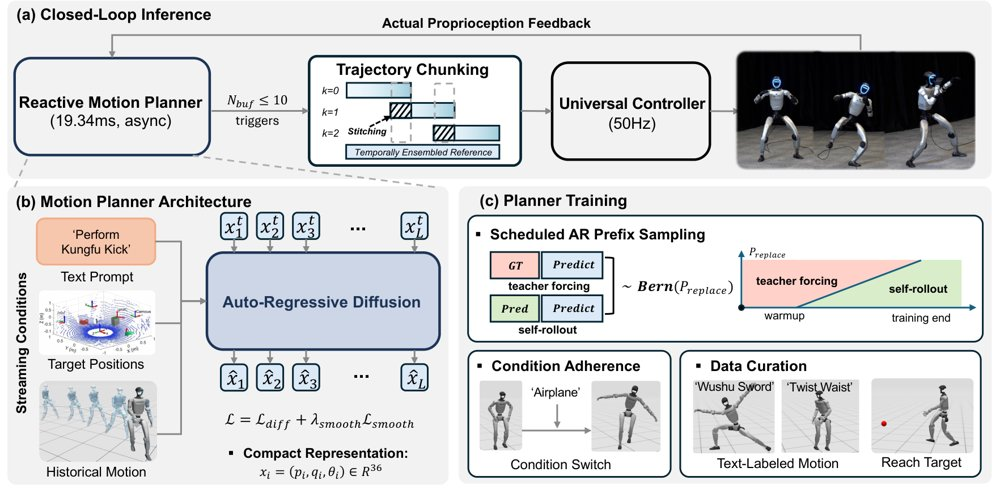
ReactiveBFM总览：异步闭环推理经轨迹分块与本体感受反馈接入通用控制器，规划器从多模态流式条件生成平滑轨迹，并以计划性前缀采样课程和条件遵循训练缓解暴露偏差。
解决了什么问题。现有的行为基础模型（BFM）只执行预先给定的参考动作，一旦环境变化或受到外力就无法应对。把生成式运动规划器直接接在它前面也不行：控制器跟踪必然有误差，规划器训练时只见过完美前缀，误差会递归累积，形成致命的暴露偏差（exposure bias）。
方法。作者用一个自回归运动扩散模型做闭环规划器，输入文本、目标位置和历史本体感受，输出36维的紧凑轨迹表示（根位置3维、四元数4维、29个关节）。训练上用计划性前缀采样课程：先用teacher forcing预热，再线性降低使用真值前缀的概率，转入self-rollout，并向前缀注入高斯噪声，迫使模型学会从错误状态恢复；同时加入速度、加速度的时间一致性损失和条件dropout。部署时采用事件驱动异步重规划，配合轨迹分块的时间集成来消除重叠预测造成的抖动。
关键结果。在带100N外力的sim-to-sim测试中，ReactiveBFM取得93.1%任务成功率、2.0%跌倒率、根相对MPJPE为34.6mm、重规划平滑度为96.9mm，比TextOp+SONIC（76.4%）高28.6%。时长匹配对照显示，开环ReactiveBFM从1×延长到5×时长成功率由75.2%降到62.3%，而同一5×时长下闭环提升到93.1%（+30.8%）。在Unitree G1真机上，零样本移动目标到达10次试验成功率90%，连续执行超过40秒；TensorRT加速后规划器延迟19.3ms、控制器5.9ms，控制环保持50Hz。规划器训练数据共37.14小时。
为什么值得看。它把“高层生成+低层跟踪”的松耦合级联改成了真正的闭环，说明鲁棒性可以从规划层持续闭环中生长出来，而不只是低层控制器给的，这为通用人形全身控制走向自主提供了可复制的工程路径。
局限 / 存疑。作者承认两点：系统不显式建模精确的全身物体交互，接触密集的loco-manipulation任务可能失效；在线规划器只以紧凑目标位置、文本和运动学状态为条件，缺少视觉和触觉，难以支撑高维感知任务。此外，真机实验依赖HTC Vive外部定位，附录指出失败主要来自跟踪器离开15m×15m测绘区域后的定位丢失，长时（≥45秒）多次技能切换后也会退化为中性姿态。
alphaXiv · arXiv
KV 缓存不再分层：DRAM 与 SSD 平级
FlatCake 把主机 DRAM 与 SSD 放进统一地址空间，KV 块写入即定址、不再迁移，命中率稳定在 94%。
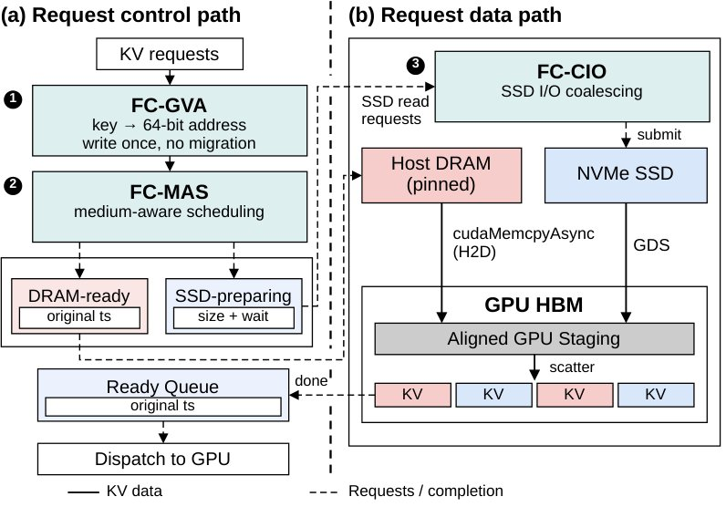
FlatCake 架构图：(a) 控制路径由 FC-GVA 把 block key 映射为 64 位 GVA，并在写入时一次性定址，FC-MAS 分离 DRAM-ready 与 SSD-preparing 两条队列；(b) 数据路径中，DRAM 命中走 cudaMemcpyAsync，SSD 读经 GDS 合并后流入有限的 GPU 暂存窗口。
解决了什么问题。现有 Mooncake、LMCache、SGLang HiCache 把主机 DRAM 当作 SSD 之前的 L2 缓存层，依赖两个前提：DRAM 的时序过滤能留住活跃工作集，以及用 DRAM 暂存来重组 SSD 的碎片读。论文对 8 条生产轨迹的刻画显示，LLM 的 KV 复用呈双峰分布，在对话、API 类轨迹中，53.2%–94.0% 的块只被访问一次，且复用距离很长；而 Claude Code 这类 agentic 轨迹虽然 98.31% 的块会被复用，但单请求平均 3,421 个块（218,922 token），单卡历史 KV 中位数 0.52 GiB、P90 达 16.0 GiB，都会直接超出主机 DRAM 容量。两种情况下，多数命中都必须由 SSD 提供，跨层迁移只是在搬运数据；同时，按逐出顺序写入磁盘会让一个 session 的块散落在非连续 LBA 上，恢复时退化为 O(layers×blocks) 次小读。
方法。作者提出 FlatCake，把 DRAM 与 NVMe SSD 视为同一层级的对等介质，放在统一的 64 位全局虚拟地址（GVA）空间之后，并在写入时按 session 连续、layer-major 的顺序把每个 KV 块直接写入目标介质，此后永不迁移。FC-GVA 在创建时依据 radix 树引用计数、session 轮次、回复长度等写入时可观测信号，决定该块进入 DRAM 还是 SSD，并把介质、节点、偏移编码进 64 位 GVA，实现 O(1) 路由和以 session 为粒度的无回写回收；FC-MAS 用双队列隔离 DRAM-ready 与 SSD-preparing 请求，SSD 预取按“等待时间/KV 大小”的 size-aware HRRN 排序，并按原始到达时间重新入队以防饿死；FC-CIO 通过读时排序归并，把散块请求合并，再经 GPUDirect Storage 直接流式写入一个双缓冲、仅容纳两层规模的 GPU HBM 窗口，并与逐层计算重叠。
关键结果。在 8×B200 上回放生产 Claude Code 轨迹（98,827 请求、21.6B 输入 token），服务 DeepSeek-V4-Flash：FlatCake 的交付缓存命中率维持在 94.16%–94.57%，距轨迹 94.72% 的复用上限不足 0.6 个百分点；Mooncake 则从 0.1 QPS 的 87.9% 跌至 0.5 QPS 以上的 64.26%。在 1.0 QPS 峰值负载下，FlatCake 平均 TTFT 为 7.57 s，相比 Mooncake 的 12.24 s、L2 Host DRAM 的 17.51 s 分别降低 1.6 倍、2.3 倍；P50 TTFT 为 6.26 s（对比 11.45 s、18.39 s，降低 1.8 倍、2.9 倍）；总吞吐为 98.3K token/s，相比 61.6K、43.2K 提升 1.6 倍、2.3 倍。SSD 读带宽为 5.03 GB/s（Mooncake 2.69 GB/s，1.9 倍），预取延迟为 1.64 s（Mooncake 9.50 s，5.8 倍），并消除了 Mooncake 6.51 倍–6.72 倍的读放大；写放大方面，FlatCake 为 1.000 倍，Mooncake 为 1.007 倍–1.018 倍。消融实验中，去掉 FC-MAS 后，平均 TTFT 增加 10%–11%、P99 增加 27%、吞吐下降 12%。在 Llama-3.1-70B（TP4，A100）8K–128K 上下文上，平均 TTFT 相比 Recompute-only 降低 2.3 倍–4.9 倍，相比 Mooncake 降低 1.5 倍–2.4 倍，相比 Mooncake-GDS 最高降低 1.8 倍（64K 时分别为 3.74 s 与 6.60 s）。
为什么值得看。KV 复用已经是 LLM 服务的标准优化，FlatCake 用生产轨迹说明，“DRAM 做缓存层”这一来自通用存储的直觉在 agentic 负载下不再成立，并给出了一种以“写入时一次性定址 + session 连续布局”换取 SSD 顺序读的替代范式。它也提醒做前缀缓存和 offloading 的系统：GDS 这类传输原语本身不能解决磁盘碎片问题，必须与写入布局协同设计。
局限 / 存疑。主要结论来自单条生产 Claude Code 轨迹的回放，且遵循 HiCache 方法不做缓存预热，DRAM/SSD 配额固定为 1 TiB 与 4 TiB，其他 7 条轨迹只用于动机刻画，没有做端到端实验；FC-GVA 的介质判定依赖回复长度阈值 τ 与 session 上下文阈值 L_agent 等启发式参数，论文正文未给出具体数字，也未给出这些参数的敏感性分析，同时实现强依赖 GDS/cuFile、预分配 XFS/RAID-0 文件池与 4 KiB 对齐等部署条件。
alphaXiv · arXiv
综述:视频生成与智能体执行框架的交汇
一篇综述以 agent harness 为分析单元,串联智能体视频生成、视频世界模型交互与递归自我改进三条路线。

图1展示从视频生成走向由 harness 中介的世界交互:条件生成仍是共同内核,harness 围绕它完成观测、决策、控制转译、生成调度,并纳入返回的反馈与相关历史。
解决了什么问题。视频生成器能产出越来越逼真、可控且时间连贯的片段,但单个生成器并不负责组织完成一个视频任务所需的决策:创意简报要拆成连贯镜头,参考要在场景间保持,失败的镜头要被检视和局部修补。交互式视频还要求动作能基于观测持续进行,而不是只交付一段成品片段。作者认为,评价分数本身很少能说明下一步该做什么,控制需要把观测连到局部决策,同时维护项目或交互状态并核算生成成本。
方法。作者把 agent harness 定义为围绕模型的可执行运行时,负责构建上下文、暴露工具、维护状态、路由反馈并约束权限与预算,并以它作为统一的分析单元组织文献。综述按三条路线展开:智能体视频生成(协调剧本与分镜规划、素材管理、镜头生产与剪辑)、智能体世界建模(由游戏引擎或编码智能体写的程序持有世界状态、视频模型负责渲染),以及视频模型开发中的递归自我改进。在第三条路线中,作者明确区分当前输出的修订、harness 状态与生成器参数及评估器的更新,以及产生后续更新的流程本身的改动。
关键结果。这是综述而非实验论文,定量性能指标论文未给出具体数字。结构化结论为:综述围绕三条路线与三个核心问题展开,提出一个以 harness 为中心的框架,并识别出四条改进可以回流到视频开发流程的渠道;作者同时给出判断——在被调研的系统里,尚无一个系统修订了训练与验证生成器的那套流程。
为什么值得看。把 harness 而非生成器当作分析单元,使视频生产、世界模型交互与模型开发三个场景被同一个框架覆盖,也把评估要求摆到台面上:必须把「修好当前这条视频」与「提升未来能力」分开衡量。对做视频生成与智能体的研究者来说,这提供了一个比对系统设计与评测口径的坐标系。
局限 / 存疑。综述不提供新实验或统一基准上的量化对比,其分类与「四条渠道」属于概念性梳理,组件图是示意性的——作者自己说明具体系统不必实现图中每个组件,场景缩略图也不是实验结果。关于递归自我改进,作者承认现有视频研究只提供了零散积木(如反馈修订可复用技能、不确定性引导数据获取),没有任何系统完成完整闭环,因此相关前景仍属推测。
alphaXiv · arXiv
期刊
Nature · Measles made a stealthy return as another virus took the spotlight
《Nature》简讯指出，麻疹在另一种病毒占据公众视野之际悄然回流。新冠大流行打乱了公共卫生项目及其资金，使疫苗接种率随之下降。文章提醒，疫情造成的免疫缺口可能让本已受控的传染病重新抬头。